宇宙之恒，天之辽阔，大地之魂，海之艺术

TNC 大事记
自1915年创立以来，TNC形成了以科学为基础的保护工作方法，我们秉承“非对抗”的工作方式，吸引了众多热心自然保护事业的人士，共竞事业。每一年，TNC全球都会有里程碑式的保护大事件发生。您可以查阅大事记，了解TNC的保护历程。

气候变化
全球气候变化加剧，对自然生态系统和人类带来巨大影响。TNC正努力利用基于生态的手段，预测气候变化的影响，增强人类和生态系统应对气候变化的能力，寻求以森林碳汇为代表的更多缓解气候变化的解决方案。
信息服务
TNC一直致力于与更多的生态保护爱好者、业内专家以及研究人员，分享我们的保护经验与信息。TNC希望，这个平台，能够为人们提供保护的最新数据和保护工具。
保护科学
向更多的人介绍生态保护工作的重要，不能仅依靠数据和图标，还需要集合社会学、心理学、传播学等多学科的知识，对艰涩的科学术语进行解读。点击“生态系统服务功能”和“人与生态保护”，了解TNC关于人类与环境相互依存关系的再思考。
- 2015要闻回顾--TNC感谢有你
2016-02-05
时光飞逝，岁月如歌，充满活力的2015转瞬即逝，满怀希望的2016已向我们款款走来，回首过去，我们收获满满，展望未来，我们任重而道远；那么，在过去的一年中，中国TNC发生了哪些重要的事呢？赶紧随小自来看一看！
- 中国企业支持巴西遏制森林砍伐
推广大豆可持续生产
2016-02-04

2016年1月25日，北京/圣保罗“大豆产业可持续发展与中巴大豆贸易展望讨论会”在北京召开。讨论会号召中国大豆进口商对可持续大豆贸易给予更多关注和支持。
- TNC林业碳汇专家赴腾冲作培训
2016-02-03

2月2日，应云南省绿色发展环境基金会邀请，大自然保护协会（TNC）林业碳汇团队来到云南省腾冲市，为即将参与“腾冲森林经营碳汇项目”的单位开展了气候变化与林业碳汇、森林经营碳汇项目的基线、社区调查和项目开发理论及技术培训。
- TNC专家为延长长江禁渔期点赞
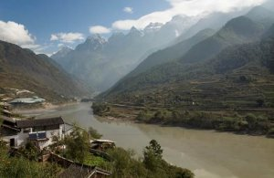2016-01-30
农业部近日宣布，2016年，长江全流域主要干支流和重要湖泊以及淮河干流全面实行禁渔期制度，并将禁渔期从3个月延长到4个月。
- 专家呼吁制定相关政策指南
推动林业碳汇发展
2015-12-29
12月16日至17日，第4届国际清洁能源论坛在澳门金沙城中心举行。论坛国由际清洁能源（澳门）联同中国质量认证中心、中国能源学会煤化工专业委员会及香港排放权交易所主办。中国TNC副首席代表、气候变化专家张小全博士应邀在“林业碳汇与林业产业发展分论坛”上作了主题演讲。
- 老河沟川金丝猴调查取得初步成果
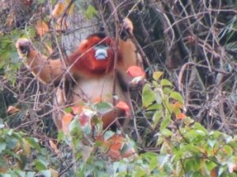2015-12-15
9月中旬开始进山考察研究川金丝猴的研究小组把考察重点集中在猴群常逗留的干沟及药山沟，观察到15次实体，发现了25处粪便和食迹的新鲜痕迹。
- 共庆彝族文化节
共赢繁荣未来
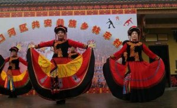2015-11-26
11月17日，中国TNC社会公益型保护项目地、四川省八月林保护区的彝族乡亲们沉浸在欢乐的海洋中，他们跳起彝家传统的月琴舞，吹响凉山的三叶口弦，庆祝八月林第一个彝族文化艺术节。
- 鹤庆西草海巡护队为成千上万候鸟守夜
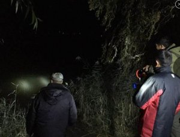2015-11-25
进入10月份后，迁徙来云南大理白族自治州鹤庆草海的候鸟越来越多。据监测统计，到11月10日已有6000多只鸟在此“安营扎寨”。这也标志着保护鸟类、严防破坏栖息地的工作进入了关键时期。鹤庆西草海自然保护中心加大了夜间巡护的次数和强度。
- 国务院发展研究中心专家组团考察云南国家公园
2015-11-12

11月9日，国务院发展研究中心资源与环境政策研究所副所长常纪文、研究室副主任吴平与云南省政府研究室、省林业厅官员及大自然保护协会（TNC）云南野外项目总监康伟和高级顾问李纯等组成的考察组开始了对国家公园的考察之旅。
- 老河沟保护区科研监测及资源保护更加深入
2015-11-04
10月26日，在老河沟历时4年的保护区本底调查即将完成之际，老河沟自然保护区科学顾问、北京大学生命科学院博士李晟、大样地调查负责人、中科院植物所专家申小莉以及中国TNC科学中心主任靳彤等专家齐聚老河沟，与保护区科研监测及资源保护人员共同探讨如何完善科研监测与资源保护工作。
- 老君山巡护队雪中巡护
2015-10-13

上周，正值深秋时节，云南丽江老君山的雨季尚未结束，但由于冷空气的降临，正在石人沟大梁露营开展滇金丝猴调查监测的TNC老君山巡护队遭遇了突发降雪，这场不期而至的初雪比去年提前了两个多月，队员们觉得既兴奋又担心。
- 万钢视察TNC在东滩的“归去来栖”项目点
2015-10-08

10月8日，全国政协副主席、科技部部长万钢、上海市政协副主席张恩迪等来到崇明东滩鸟类自然保护区调研。万钢副主席还来到大自然保护协会（TNC）在东滩的“归去来栖”项目点，参观了观鸟栈道、观鸟墙，并在观鸟屋听取了TNC项目负责人杨波博士的工作介绍。

- 证据地图告诉我们环保和人类福祉的关系
2016-02-26
大自然保护协会、保护国际、加州大学洛杉矶分校、伊利诺伊大学及世界银行等机构正在合作完成一个“证据地图”项目，它把与人类福祉有关的自然保护科研成果绘制在地图上，作为“证据”呈现给大众。
- 如果真有美人鱼，她们一定住在？
2016-02-25
前段时间超火的电影《美人鱼》，你看过了吗？那句：“当这个世界连最后一滴干净的水、一口干净的空气都没有了，钱还有什么意义呢?”有没有打动你的心？如果这个世界上真的有美人鱼的话，她们会住在哪里呢？
- 森林健康的功臣：樫鸟和乌鸦
2016-02-24
大自然保护协会（TNC）、内布拉斯加大学林肯分校、史密斯索尼安迁徙鸟中心、康奈尔鸟类学实验室的科学家们最近共同发表的一项研究成果表明，鸦科鸟类是帮助栎树、橡树、松树等应对生境破碎化和气候变化挑战，得以繁殖和健康生长的功臣。
- 你家在35个生物多样性保护优先区域里吗？
2016-02-23
环保部完成了对生物多样性保护优先区域边界的核定！最具保护价值的35个区域有你家吗？赶紧来看看！
- 穿山甲
这些你不一定知道!
2016-02-19
说起穿山甲，这可是一种很特别的生物！它们看起来很害羞，喜欢离群索居，拥有大而坚硬、分布均匀的重叠鳞片，看着就像会走路的“松果”，靠着粘粘的舌头捕捉猎物。可小自敢说，穿山甲为啥这么特别呢，你不一定知道！
- 招聘|
我们找的就是你！
2016-02-16
对保护工作心向往之，想要发挥所长为自然保护做点实事？那还等什么？快来吧！
- 欢喜过大年！对"最后的珍馐异宝"Say NO！
2016-02-06
你知道吗？为了你的欲望，为了你的“面子”，很多野生动物被推向了灭绝的边缘，在惊恐中离开了这个世界！
- 新工具帮我们应对水资源危机
2016-02-05
据美国国家地理网站一则报道称，2015年12月初，达沃斯世界经济论坛发布了年度危机评估报告，报告指出水资源危机将是未来十年全球面临的最大危机。
- 中国全球保护基金：立足中国，放眼全球
2016-02-02

面对全球性生态保护的挑战，我们需要跨越国界走到一起，一起携手努力！CGCF成功地走出中国，资助了非洲等地的保护项目！赶紧来看看，我们的CGCF都做了些什么？
- 2015年非洲野生动物保护的七个里程碑
2016-01-25
大自然保护协会（TNC）和国际爱护动物基金会(IFAW)和中国互联网巨头腾讯合作，共同打击网络中的野生动物交易，推动大象保护。这些活动将对野生动物保护产生重大影响。
- 候鸟“寻踪”
2016-01-21
为啥要迁徙？它们都飞到哪里去了？科学家怎么追踪候鸟？
- 来自达沃斯的重要观点： 水资源是一笔重要资产 为水资源投资获益良多
2016-01-20
当需求超出供给时，人们往往习惯选择困难且成本昂贵的解决方案，如修建水库，从远处引水，从国外进口水，或建造海水淡化工厂。但本周（2016年1月20日）在瑞士达沃斯的世界经济论坛上，我希望全球领袖考虑另一个解决方案——一个能明显加速解决全球水资源短缺根源的方案。 让我们运用经济手段——市场的力量来更明智地利用水资源。
- 树木不会说谎
2016-02-19
在美国新墨西哥州圣达菲的一片森林里，大自然保护协会（TNC）与森林管理局正合作实施一项计划，通过对树木年轮历史的研究，为森林和水资源管理提供帮助。
- 无人机帮我们更清晰地看到海岸线的变化
2016-02-18
正在美国火热起来的无人机运动与大自然保护协会（TNC）的气候变化项目合作，为公众参与环保做出榜样。
- 大自然保护协会（TNC）2016年环境展望
2016-01-27
2015年年底，世界在巴黎见证了一个历史性的时刻：全球领导者汇聚一堂，找到彼此的共同点，并磋商形成了气候协议。这份协议不仅发出了我们向低碳经济发展的信号，并且确认了自然作为强大而有效的气候解决方案的角色。现在，到了借此势头为环保做更多事的时候了。
- 拆除130岁大坝
让溪流焕发生机
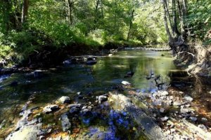2016-01-08
美国阿拉巴马州的大卡伦溪河上一座130多年的大坝在两年前被拆除。如今，大卡伦溪河中曾被阻断了繁殖回游河道的54种鱼类、多种野生动物及岸边土地重新焕发出勃勃生机。
- 化肥不是不能用，怎样用才增产减污？
2015-12-30
世界人口不断增长导致食物需求持续增加，化肥是增产的好办法，但土壤中的肥料随水流入河流湖泊，又造成严重污染。这些富含肥料的水导致藻类大量繁殖，引发新的生态危机。
- 太阳能超人
2015-12-29
不久前，盖伯·斯泰芬（Gabe Stephens）和杰森·格丁（Jason Gerding）在大自然保护协会（TNC）的Moab项目办公室楼顶安装了一块特大太阳能板。这种新太阳能板的发电量超过原有260瓦太阳能板的24倍。
- 明星携手为野生动物发声
2015-11-19
11月11日，由大自然保护协会、世界自然基金会、野生救援等5个保护组织共同发起的以保护野生动物为主题的LOVE IS WILD全球巡回摄影展在香港开展。展览由著名摄影师兼制片人戴尚安主持。乐基儿、谢婷婷、Mia Kong及Jocelynn Luko-Sandstrom等一众明星热情参与，
- 为迁徙候鸟创建临时经停栖息地
2015-10-21

今年秋天，从北极向南迁徙的鸟群会在加利福尼亚发现一片2800多公顷全新的湿地可以停歇。这片湿地曾是稻田，水稻收割后被浅水泡了几个星期，形成了新的候鸟栖息地。这得益于大自然保护协会（TNC）与美国国家航空航天局、地质调查局共同开展的鸟类回归项目。
- TNC发布全球发展对自然影响地图
2015-10-21
最近，大自然保护协会（TNC）发布了一份全球发展对自然影响地图。这份报告指出，到2050年，全球人口总量预计将达到90亿。激增的人口将对土地资源产生更大需求。到那时，城市化发展、农业扩张、能源开发、矿产开采将对全球现存森林、草原及其他生态系统总面积的20%造成威胁。毫无疑问，高速的发展扩张将对淡水、气候变化及生物多样性提出挑战。
- 珊瑚礁正陷入白化危机
2015-10-16
上周，美国国家海洋和大气管理局（NOAA）指出，全球温度的不断提高致使珊瑚大规模白化。目前这一现象已蔓延至太平洋热带区域、印度洋及大西洋海域。
- 用声音检测雨林健康状态
2015-10-14
大自然保护协会（TNC）在澳大利亚的科学团队研发了一种通过记录声音来研究热带雨林中丰富的自然资源的工具。
- 濒危蜻蜓在伊利诺伊州被放生
2015-09-25
美国伊利诺伊州森林保护区不久前接收了一批新主人、濒危的海恩斯翡翠蜻蜓。在过去几年里，它们被饲养在大自然保护协会（TNC）南达科塔实验室。科学家相信它们能适应这片森林的环境，尽管目前其种群数量还很少。
- 全明星支持TNC
他们，是舞台中央闪耀的男神女神。 他们，也是热爱大自然的地球公民。 近期，他们将出现在荧幕前，以最真实的状态和你分享大自然的故事。 今天，先邀请你当一把柯南，利用已有的线索，猜猜他们是谁吧！
- 一张图让你看懂生态流
水，哗啦啦流起来才健康。但是，一种叫做“大坝”的东西，让奔腾的河流变成了水库静水。最郁闷的是生活在其中的鱼儿，好像四季突然消失，连什么时候生孩子都不知道了；但是，大坝确实是个能干的家伙，为我们发电、灌溉，还减少了洪灾威胁……于是，平衡自然和人类需求的生态流诞生了。
- TNC第八届全球摄影大赛
随着Tulus Simatupang在加拿大收到了支持者的最后一张选票，TNC第八届全球摄影大赛终于完美落幕，大紫鹭带着小红翅黑鹂的“非亲生版爸爸去哪儿”摘得桂冠。 “最美鸟儿”佛法僧、互相亲吻的小狐狸、蹒跚学步的幼鸟儿与堪比电影《指环王》场景的神奇风光……画面中的大自然美得似乎都不真实了，让人不得不叹服造物主的神奇。
-
内蒙古

伴随着2012年新年钟声，TNC 内蒙古项目的办公室顺利竣工。这幢外表看起来普通的小楼，可是内有乾坤，他是运用了诸多先进技术装备起来的“绿色节能建筑”。在建造和使用过程中，他可以比传统建筑降低能耗70%-75%，最高可达到80%。
-
自然中国

中国是一个生物多样性大国，有着丰富的野生动植物资源。为展示我国自然保护工作的成果，宣传人与自然和谐共存的美好愿望，体现2008北京“绿色奥运、科技奥运、人文奥运”的奥运精神，国家林业局、第29届奥林匹克运动会组织委员会、大自然保护协会(TNC)共同主办“自然中国，和谐家园——我眼中的自然保护区”摄影大赛。
-
照片之声
“照片之声”项目聚合并培训了云南西北部64个乡村共223名当地村民，按男女比例平均挑选摄影员，年龄在15岁至78岁之间，来自6个少数民族；参与者中98%的人在参加本项目前从来没有接触过照相机。让他们在一年的项目期内拍摄下他们身边丰富多样的自然环境和传统的生活方式各个侧面，通过协调员组织的交流活动，讲述照片背景故事。
- 红外相机拍摄到的最原生态的动物朋友们
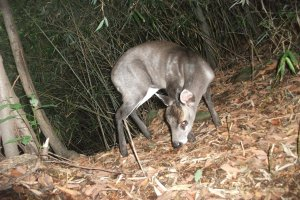
2011年5月，我们的工作人员在四川平武县的TNC项目地架设了20台红外相机，对当地包括大熊猫、羚牛在内的大型兽类进行监测。这组照片就是红外相机拍摄到的最原生态的动物朋友们。虽然有些影像并不清晰，但能欣赏到他们在自己家园中悠闲自然的神态，就是我们最大的快乐。
- 梅里雪山生物多样性

梅里雪山群峰神姿各异，美妙绝伦。在梅里茂密的森林中生活着万千种野生动植物。梅里雪山以其独特的生态和地质价值被联合国世界自然遗产委员会列入世界自然遗产名录。十多年里，TNC在梅里雪山开展了许多保护工作。2009年TNC请几位野外摄影师用近一年时间拍摄了近万幅图片，生动地记录下梅里雪山丰富的生物多样性和撼人心魄的自然之美。
- 纪念一条即将消逝的自然河流——金沙江
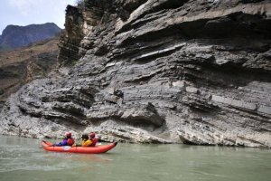
作为长江中上游的主要干流，金沙江肩负着长江流域的生态屏障，水源涵养和水土保持的使命；与此同时，金沙江上游还是我国最大的天然林区之一，其罕见的完整的自然生态系统和水能富集带，对长江中下游生态的安全起着关键的自然调节作用，可以说，著名的金沙江N字形大拐弯，决定着中国的生态命运。
-
滇金丝猴的故事
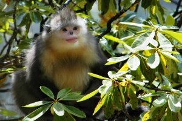
滇金丝猴是地球上最大的猴类，是地球上海拔分布最高的灵长类动物，而且他们长得人模人样，并拥有令人心动的美丽红唇，堪称世间动物之最美，是云南这一世界著名动物王国中的皇冠明珠。
- 鲍洛克眼中的巴尔米拉
TNC的科学家启德·鲍洛克（Kydd Pollock），在经历了被鲨鱼咬伤头部并差点失去左眼后再次投身海洋保护。这里呈现的一组照片就是他工作的地方也是被咬伤的地方巴尔米拉环礁的景象。也许看了鲍洛克眼中的环礁，我们就会明白他为何对海洋保护无怨无悔。
- 听大自然保护协会志愿者说！
加入中国TNC是什么体验？听志愿者怎么说才靠谱！
- 汛期来临话洪水
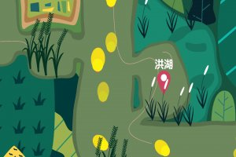
你知道吗？占中国国土面积1/5的长江流域不仅养育了全国1/3的人口，生产了全国1/3的粮食，而且还是中国经济增长最有活力、最具潜力的地区。然而，洪水风险却始终伴随着沿岸居民。
- 自然达人林忆莲

最后一位进入TNC家族的大明星，是一名传奇歌后，已拥有超过30张个人专辑和无数国际奖项。她最新个人专辑主打歌《盖亚》融入了许多对大自然忧思。她就是林忆莲 ，和她一起加入TNC，为我们生存的世界带来改变。
- 自然达人王敏德
他是一名极具魅力的香港实力派男演员，同时，作为一名飞行员，他经常有机会以不同的角度欣赏美丽的大自然。他就是王敏德，和他一起，同心协力，为我们的后代留下一个更繁盛的未来。
- 自然达人莫文蔚
所有生命都与大自然息息相关，没有大自然的丰富资源，我们不可能拥有现在开心富足的生活，但地球环境正遭受破坏。假如我们不去关心大自然，大自然便会放弃对我们的关心。
- 自然达人吴彦祖
如果我们不保护大自然，我们的后代将会失去这个地球
-
自然的价值
人类是自然最大的消费者，我们的森林、我们的水源、我们的新鲜空气、我们赖以生存的地球，我们的未来，都需要全人类共同守护。走近TNC，你会慢慢知道，大自然如何通过珊瑚礁拯救生命，如何通过森林清洁空气……保护，是科学、是态度，是要我们站在一起。
- 和林格尔生态修复纪实
天苍苍，野茫茫，风吹草低见牛羊，无边的草场似乎只存在于久远的童谣。人类活动造成的土地荒漠化、水资源短缺等生态问题，如今正在威胁人类的生存。植被恢复、绿色农业、水资源调查……保护实践者们在和林格尔不断尝试着。我们用镜头记录下了发生的一切，不大的一块儿地方，却有希望。
-
守护雪山精灵
滇金丝猴是中国独有的珍稀物种。目前，总数量仅为2500余只。狩猎、森林砍伐、开荒放牧等人类活动正在严重威胁着它们的生存。2004年，TNC在云南启动了滇金丝猴保护工作。一直在为完善巡护监测体系不断努力着
-
中国的森林

大家都知道森林有着重要的生态服务功能，但在人口不断增加、发展速度不断加快的今天，我们怎样才能守护住这些绿色的宝藏呢？
- 无国界的保护
中国人在其中

在如今全球化进程不断加快的世界，自然保护难题往往是跨国度的。中国人在走出国门积极投资建设海外的同时，也逐步认识到致力环境保护不仅能造福自然，更能维护经济稳定，提升人类的健康与福祉。中国全球保护基金（CGCF)由TNC创立，用于解决全球性环境问题为目标的国际项目，从而带动各国慈善人士直接参并解决需要解决的国际挑战。
- 老河沟-森林狂想曲
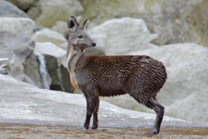
2012年2月10日，四川省平武县老河沟自然保护区下了当年最大的一场雪。TNC工作人员用摄影机记录下了山里的美景，在巡山的过程中，还意外收获了风雪中探头探脑的漂亮小鸟、在水边发呆的林麝……
- Q:【有问有答004】北极冰盖面积增加，是否说明全球变暖是个谎言？
A: 尽管对气候变化还有一些质疑，未来气候变化还有一定不确定性，但是，即使只有万分之一、甚至百万分之一的可能性，一旦发生，气候变化带来的灾难是巨大的。因此，明智的选择就是做好万全的应对措施，不管以后会不会发生灾难，会发生多大的灾难，我们都不会后悔。
- Q:【有问有答003】怎样救助被石油污染的鸟类?
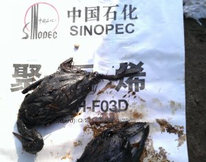
A: “11•22”中石化东黄输油管道泄漏爆炸事故发生后，出事海域约三公里的海面被石油污染，当地环保组织发现，一些海鸟也不能幸免，成为此次事件的受害者。到底应该怎样救助被石油污染的鸟类？TNC想和您分享国际鸟类救援组织的经验。
- Q:【有问有答002】美国怎样处理环境争议项目？
A: 在美国阿拉斯加州的布里斯托尔湾，环境保护和发展孰轻孰重之间的争论已经进行了二十多年，这个被称为美国总统奥巴马面临的最棘手问题，终于要在2013年下半年揭晓答案。 从空中俯瞰位于美国阿拉斯加州西南部的布里斯托尔湾（Bristol Bay），你会看到交织盘错的河流、山脉、低地森林、苔原、湖泊和湿地。
- Q:【有问有答001】面对极端天气，一个城市应该怎么做？
A: 2012年10月29日，飓风桑迪席卷美国纽约市，43人殒命在这次极端天气中。为了更好的应对愈加频繁发生的极端天气，纽约市启动了一项名为“重建与恢复特别倡议”的特别计划，这项计划最终成为一份报告，大自然保护协会有幸参与完成了报告中的部分工作。
- 为地球举杯
为地球举杯——2013年4月22日，让我们一起来野餐，为地球举杯，感谢自然的馈赠。每年的地球日，TNC都会倡议大家到户外去，到自然里去，与家人和朋友们一起野餐。感受芳草茵茵，微风徐徐，近距离感受自然的魅力。
- TNC企业伙伴绿色沙龙
2012年3月2日，TNC在北京举办了“企业伙伴绿色沙龙”，十余家知名企业相关部门的负责人应邀与会。TNC 业务拓展部做了TNC整体介绍，宣传推广总监介绍了TNC的宣传活动计划和企业参与的机会及途径。在"走近TNC科学家"环节，气候变化团队的科学新秀跟大家一起分享身边有关气候改变的趣味科普知识，现场讨论互动气氛十分热烈。
- TNC参加淡水保护论坛
4月27日，TNC参加了由《WTO经济导刊》和陶氏化学举办的水资源管理与城市可持续发展论坛。TNC（中国）企业合作顾问朱乐作为主题演讲嘉宾之一，向听众阐述了生态系统服务功能的概念，分享了TNC在全球示范的淡水保护模式案例，包括拉丁美洲的水基金模式、中国长江的生态流和水补偿基金模式
- TNC2012年第二届企业伙伴绿色沙龙圆满结束
2012年6月19日，本年度第二届TNC企业伙伴绿色沙龙正式开始。与第一届一样，与TNC有着良好合作关系的二十余名企业及机构代表应邀与会。TNC中国对外事务总监喻捷致欢迎词，并表达了企业参与对推动保护行动的重要意义。
- 2011年度社区保护行动
云南特殊的地理位置、复杂的地形和多样的气候，使之成为中国乃至全世界生物多样性最为丰富的地区之一。在这些生物多样性富集的区域内生活许多社区村民，他们既是自然资源的使用者，又是最直接有效的保护者。为鼓励他们加入到自然保护行列，培养他们的乡土自豪感，使他们真正成为森林家园的守护者
- 本周本地本季——我选择！
6月5日是世界环境日。每年的这一天，各国都会遵循联合国环境规划署确定的主题举办适合国情的公众宣传活动。2012年“6•5”世界环境日的主题为“绿色经济，你参与了吗？”（Green economy：Does it include you?），以此推动人们思考如何让绿色经济深入到日常生活的方方面面，从而带来社会、经济和环境的良性转变，满足世界人口不断增长的需要。
- 关注长江最后的鱼类保护区
从国家环境保护部公告 2011年 第1号中获悉“长江上游珍稀特有鱼类国家级自然保护区”重庆辖区内范围将被缩小，将保护区内松溉镇至马桑溪大桥水域调整为非保护区水域，调出长度22.50公里；将石门镇至地维大桥由缓冲区调整为实验区，长度73.30公里。
- 会聚社会心声
共同拯救鲨鱼
2011年新年一始，大自然保护协会(TNC)北亚区总干事长张醒生先生就在他的微博中提出“拯救鲨鱼，禁吃鱼翅”的建议，并提议政协委员在今年3月全国政协会议上提交《呼吁制定禁止鱼翅贸易法规》的提案。
- 企业合作伙伴志愿者
10月26日，TNC在北京举办了“企业合作伙伴志愿者项目推介会”，部分与TNC 长期合作的国际知名企业社会责任部门的负责人应邀与会。北京东溪柳环保工程有限公司的马可先生为与会者介绍了官厅水库利用植物治理污染水源的情况。TNC希望通过此类活动帮助企业实践其企业社会责任，增强对生态保护及对TNC项目的认知，同TNC开展更广泛的合作。TNC将根据企业的需求，细化志愿者项目的内容，拓展与企业互动的不同方式，带动更多志愿者参与自然保护。
- 全球40多位科学家联名反对鱼翅交易
美国、加拿大、澳大利亚、印度、墨西哥等国家的40多位科学家今天联名发出公开信，反对鱼翅交易。今天傍晚，这封公开信通过大自然保护协会（TNC）第一时间到达记者手中。签署公开信的科学家包括美国佛罗里达州穆特海洋实验室海洋生物学家Robert Hueter、澳大利亚昆士兰大学教授Christine Dudgeon等。
- 业务发展部门寻找合作伙伴啦
目前大自然保护协会（TNC)中国部在云南、四川和内蒙三省开展了保护项目，鼓励当地社区居民以有机无污染的方式种植当地特产。我们现在需要寻找有设计创意、具备制作工艺的设计公司与我们共同合作，为这些有机特产进行包装设计，从而更好地呈现当地特产的本土特色。
- “自然中国，和谐家园––我眼中的自然保护区”摄影大赛
中国是一个生物多样性大国，有着丰富的野生动植物资源。为展示我国自然保护工作的成果，宣传人与自然和谐共存的美好愿望，体现2008北京“绿色奥运、科技奥运、人文奥运”的奥运精神，国家林业局、第29届奥林匹克运动会组织委员会、大自然保护协会(TNC)共同主办“自然中国，和谐家园——我眼中的自然保护区”摄影大赛。
-
您好，我在营口，请问通过什么渠道可以参加TNC的志愿者活动呢？ 我的微博：http://weibo.com/676463789 我的个人网站：http://www.mcmid.cn 邮箱：mcmid@vip.qq.com 谢谢。
mcmid
2014-04-29 13:33:27
-
您好！我们是桂林市八大高校的代表，请问我们怎么才能加如你们呢？
桂林电子科技大学根与芽环境社
2014-04-27 13:22:21
-
我叫谢昌明，是贵州省黔南布依族苗族自治州都匀市林业局工作人员，长期从事森林保护和农村工作，热爱那一片阳光下的树木，喜欢摄影和文字，有浓厚的性趣参与你们的活动。我愿意付出精力和时间，可否接纳一名老森林警察的请求！ 都匀市林地210万亩，森林覆盖率56%，森林火灾等灾害频繁发生。如何保护自然生态？我有一些思索，愿分享！ 电话13308549806 13308549806@163.com
用户8072165367
2014-04-25 11:45:46
- “一切都为了无悔” TNC金牌气候变化专家：张小全博士
他领衔在林业碳汇领域创造了多个首次： 全球首个清洁发展机制（CDM）造林再造林方法学、全球首个CDM造林再造林项目、全球第一个获得气候、社区和生物多样性（CCB）标准金牌认证的林业碳汇项目。 他领衔开发了多个被国家发展和改革委员会批准的中国温室气体自愿减排方法学，如森林经营碳汇项目方法学、竹子造林碳汇项目方法学、小规模非煤矿区生态修复项目方法学等； 他作为领衔专家，首次编制了中国土地利用变化和林业温室气体(GHG)清单。 他就是中国TNC金牌气候变化专家、TNC中国项目副主任：张小全博士
- 笑兰手记--遇到你
爱上你
有机会回到少年记忆中最美的地方开展保护工作是多么美妙的一件事。遇见鹤庆草海，爱上这片草海，一切是那么的自然。
- 感谢有你丨正能量附身
是谁在助力大自然保护协会（TNC）、推动中国环保事业？你立刻想到的，是睿智的科学家和给力的项目工作者。不过，在TNC，还有这样一群人，他们付出自己的业余时间，为TNC的工作尽绵薄之力，在环保之路上且行且思。他们，就是可爱的志愿者们，TNC大家庭中不可或缺的一部分。
- 史上最炫酷的志愿者，是怎样一番体验？
大学已经度过了四分之三，回头看看，却发现大学生活过的好平凡。 总是觉得有些事想想就好，没必要改变。 整天待在宿舍里，见一样的人，重复同样的话题……